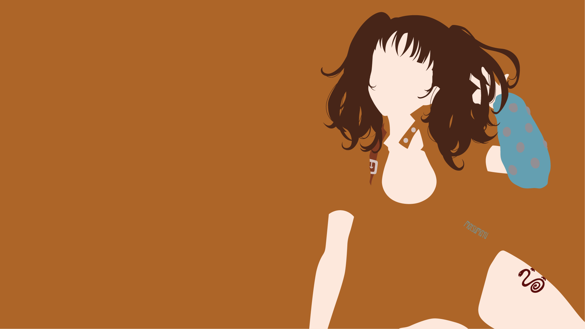
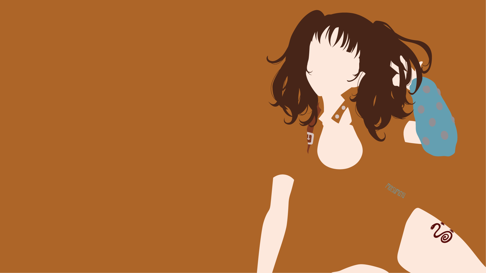

Meliodas
Meliodas: Líder dos Sete Pecados Capitais, Meliodas é o filho do Rei Demônio e carrega a maldição da imortalidade. Ele é poderoso, utiliza a habilidade "Full Counter" e esconde um passado sombrio.
Ban
Ban: Imortal e quase invulnerável, Ban é leal a Meliodas e tem um amor profundo por Elaine. Sua habilidade "Snatch" permite roubar objetos e forças dos outros.
Escanor
Escanor: O mais forte durante o dia, Escanor possui a habilidade "Sunshine," que o transforma em um gigante poderoso. Ele é orgulhoso, mas também solitário, com um amor não correspondido por Merlin.
Merlin
Merlin: Feiticeira poderosa e enigmática, Merlin possui vasto conhecimento em magia. Sua habilidade "Infinity" mantém feitiços indefinidamente, e sua busca insaciável por conhecimento a torna imprevisível.
Harlequin
King Harlequin: Rei das fadas, King controla o Spirit Spear Chastiefol e busca redenção por falhas passadas. Ele nutre sentimentos profundos por Diane e é dedicado a proteger aqueles que ama.
Diane
Diane: Uma gigante de força colossal, Diane é mestre em manipular a terra. Apesar de sua força, ela é insegura sobre sua estatura e busca ser aceita pelos humanos.
Gowther
Gowther: Um boneco criado por um mago, Gowther luta para entender as emoções humanas. Sua habilidade "Invasion" permite manipular mentes, mas ele busca encontrar seu próprio senso de identidade.